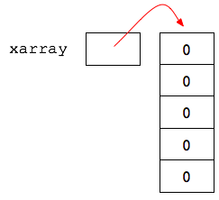
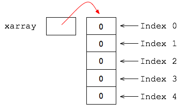
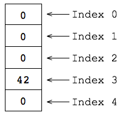

In diesem Kapitel lernen wir, wie man viele Informationen in einem Konstrukt abspeichert. Zum Beispiel wollen wir in einem Spiel 10 Bälle fliegen lassen und wollen für alle Bälle die x-Koordinate speichern. Wir wollen aber nicht 10 verschiedene Variablen anlegen, sondern lieber eine Variable, in der alle Daten drin sind.
Becherhalter
Jeder von uns war bestimmt schonmal bei McDonalds und Co. und hat sich dort ein Getränk zum mitnehmen geholt. Das zu transportieren ist kein Problem - immerhin hast du ja zwei Hände und ein Getränk. Also immer noch eine Hand frei. Aber was ist, wenn du deinem Kumpel ein Getränk mitbringen möchtest? 2 Hände, 2 Getränke - geht schon noch. Aber was ist, wenn du 3, 4, 5, etc. Getränke mitnehmen möchtest? Dann bekommst du einen schönen Becherhalter mit. Der macht es dir um einiges leichter viele Getränke zu transportieren.
Mit Arrays ist das ganz ähnlich. Wir haben schon gelernt, dass Variablen Container sind - also in unserem Beispiel sowas wie Becher. Das was in der Variable drin ist, ist ihr Wert. Bei uns wäre das Cola, Fanta, Kaffee, etc. Ein Array ist dann sowas wie ein Becherhalter - es hält mehrere Variablen der selben Art in einer Konstruktion - und ist dabei selber eine Variable (also eine Art Container).
Array erzeugen
So ein Array lässt sich ganz leicht erzeugen. Das geschieht - wie immer - in zwei Schritten, der Deklaration und der Initialisierung.
Ein Array wird ähnlich, wie auch andere Variablen deklariert - wir verwenden nur einen anderen Datentyp. Wenn wir z.B. ein Array für Integer Werte erstellen möchten, dann brauchen wir den Datentyp int[]. Also den "normalen" Datentypen plus 2 eckige Klammern - das "Zeichen für den Becherhalter."
int[] xarray; // Arrayvariable deklarierenMan beachte, dass der Becherhalter an sich noch nicht existiert! Wir haben bisher nur die Variable deklariert, aber den Becherhalter noch nicht gebaut. Die Variable xarray hat momentan den Wert null. Dieser steht in der Programmierung nicht für die Zahl 0, sondern für "nichts".
Jetzt müssen wir noch den Becherhalter erzeugen. Hier müssen wir uns festlegen, wie viele Becher genau das Array halten kann. Stell dir das Array wie ein Muffin-Backblech vor, da musst du dich bei der Herstellung auch entscheiden, wieviele Muffin-Löcher du reinstanzen willst. Wir nehmen mal 5 Becher:
xarray = new int[5]; // Array mit 5 Elementen erzeugenHäufig macht man beides in einem Schritt:
int[] xarray = new int[5];Unseren Becherhalter kann man sich wie ein Gitter vorstellen, eine Batterie von Behältern. Die Variable xarray zeigt jetzt auf dieses Gebilde:

Beachte, dass der Datentyp dieser Variable int[] ist, also ein Integer-Array, angedeutet durch die eckigen Klammern. Die Variable xarray kann also nicht etwa eine einzelne Zahl speichern, sondern eben nur diesen kuriosen Becherhalter.
Elemente zugreifen
Jetzt haben wir plötzlich 5 Becher statt nur einen. Wir nennen die Becher auch Array-Elemente. Wie kommen wir an so ein Element ran? Ganz einfach: die Elemente sind durchnummeriert, und zwar von 0 bis 4. Diese Zahlen nennt man auch Indizes.

Diese fünf Elemente können wir mit folgender Syntax abrufen:
println(xarray[0]); // Element 0 ausgeben
println(xarray[1]); // Element 1 ausgeben
println(xarray[2]);
println(xarray[3]);
println(xarray[4]); // letztes Element ausgebenZu Beginn haben wir da überall Nullen drin, weil jeder einzelne Becher vom Typ Integer ist und 0 der Standardwert von Integer Variablen ist. Wenn wir das ändern wollen, schreiben wir zum Beispiel:
xarray[3] = 42; // ZuweisungIntern sieht das Array jetzt so aus:

Wenn du genau hinschaust, wirst du feststellen, dass sich ein einzelnes Element wie xarray[0] ganz genau so verhält wie eine handelsübliche Integer-Variable. Man muss sich nur an diese eckigen Klammern gewöhnen. Du kannst z.B. auch mit Array-Elementen rechnen:
int result = xarray[0] + xarray[3] - 10;
println(result); // 32Größe des Array
Wir haben oben ein Array mit 5 Elementen geschaffen. Diese Zahl ist eine Eigenschaft des Array-Objekts, die wir per Punktnotation abrufen können und zwar mit
xarray.length .
int[] xarray = new int[555];
println(xarray.length);555Beliebter Fehler (Exception)
Der beliebteste Anfängerfehler bei Arrays ist es, nicht zu beachten, dass Informatiker immer bei Null anfangen zu zählen. Ist ja auch merkwürdig. Versuche mal:
int[] xarray = new int[10];
xarray[10] = 23; // Index 10 existiert nicht!Processing sagt zu recht: ArrayIndexOutOfBoundsException. Eine 'Exception' (engl. Ausnahme) bedeutet beim Programmieren 'Fehler'. In diesem Fall ist der Fehler, dass das Element 10 nicht existiert. Es existieren nur Elemente mit Namen 0 bis 9.
Kurzschreibweise: Array erzeugen und befüllen
Wenn du schnell ein Array erzeugen und gleich mit konkreten Werten befüllen möchtest, schreibst du:
int[] zahlen = {8, 42, -3, 200};Dieses Konstrukt erzeugt eine neue Array-Variable zahlen der Länge 4 mit den entsprechenden Werten. Die ausführliche Variante wäre:
int[] zahlen = new int[4];
zahlen[0] = 8;
zahlen[1] = 42;
zahlen[2] = -3;
zahlen[3] = 200;Vorsicht: Die Kurzschreibweise darfst du nur dann verwenden, wenn die Variable deklariert wird, also ganz am Anfang der Lebensdauer einer Array-Variablen. Die Kurzschreibweise ist später nicht mehr erlaubt. Das hier geht nicht:
int[] zahlen = new int[3];
zahlen = { 5, 20, 8 }; // FEHLER! Nur bei Deklaration erlaubt.Array ausgeben
In Processing können wir übrigens mit...
println(zahlen); ... sehr bequem die Inhalte eines Arrays betrachten, die jeweilige Indexzahl wird in Klammern mit ausgegeben:
[0] 8
[1] 42
[2] -3
[3] 200Diese besondere Art der Ausgabe gibt es nur in Processing, nicht in Java.
Es gibt noch 2 weitere Möglichkeiten Arrays auszugeben:
printArray(zahlen); // Alternative zu println - funktioniert zuverlässig
print(zahlen); // zeigt Daten (ohne Indizies) an - manchmalCoding Style
Bitte achte darauf, wo Leerzeichen und Zeilenumbrüche gemacht werden, und wo nicht.
int[] zahlen;
zahlen = new int[10];
zahlen[2] = zahlen[0] + zahlen[1];Denk auch daran, deinen Code mit Bearbeiten > Autoformatierung von Processing korrekt einrücken zu lassen (Tastenkürzel STRG+T bzw. CMD+T).
Zusammenfassung
Ein Array kann mehrere Dinge vom gleichen Typ speichern. Man kann sich einen Array als Schrank mit durchnummerierten Fächern vorstellen.
- Der Datentyp eines Array ist der Typ der enthaltenen Element und dahinter eckige Klammern, z.B. int[] für einen Integer-Array oder String[] für einen String-Array
- Array mit 5 Fächern erzeugen: new int[5]
- Elemente sind durchnummeriert, beginnend bei Null. Diese Nummer nennt man Index eines Elements.
- Zugriff auf ein Element über den Index: foo[3] greift auf das 4. Element zu
- Länge des Array foo mit foo.length.
- Schnelles Erzeugen und Befüllen eines Array: int[] foo = { 3, 42, -50 };